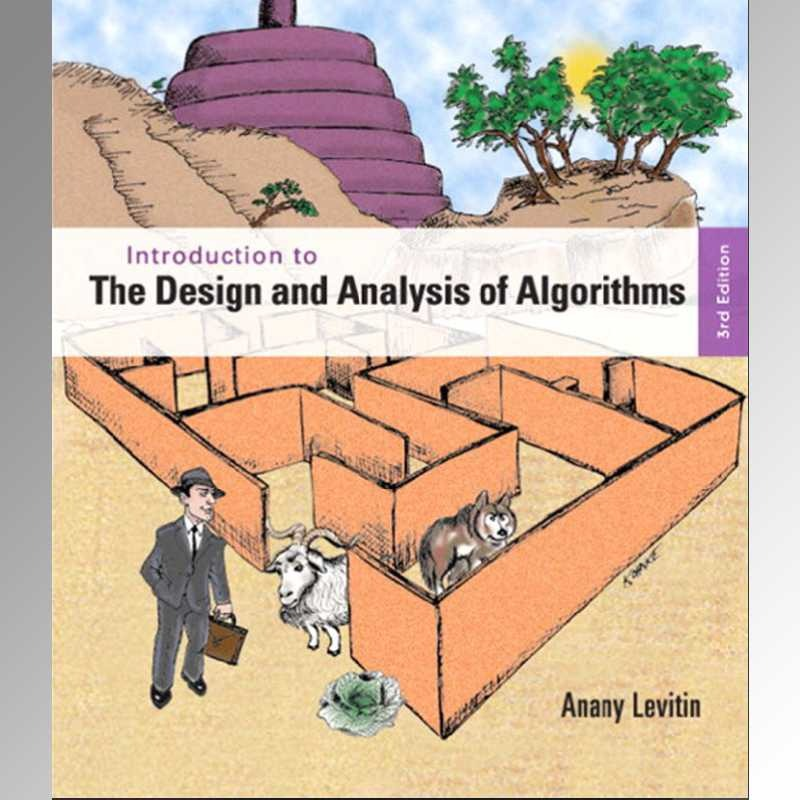
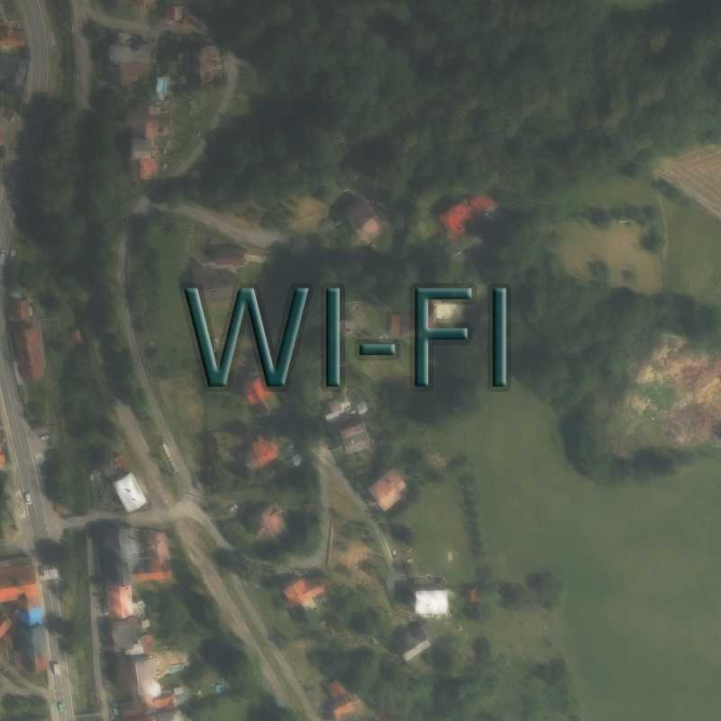
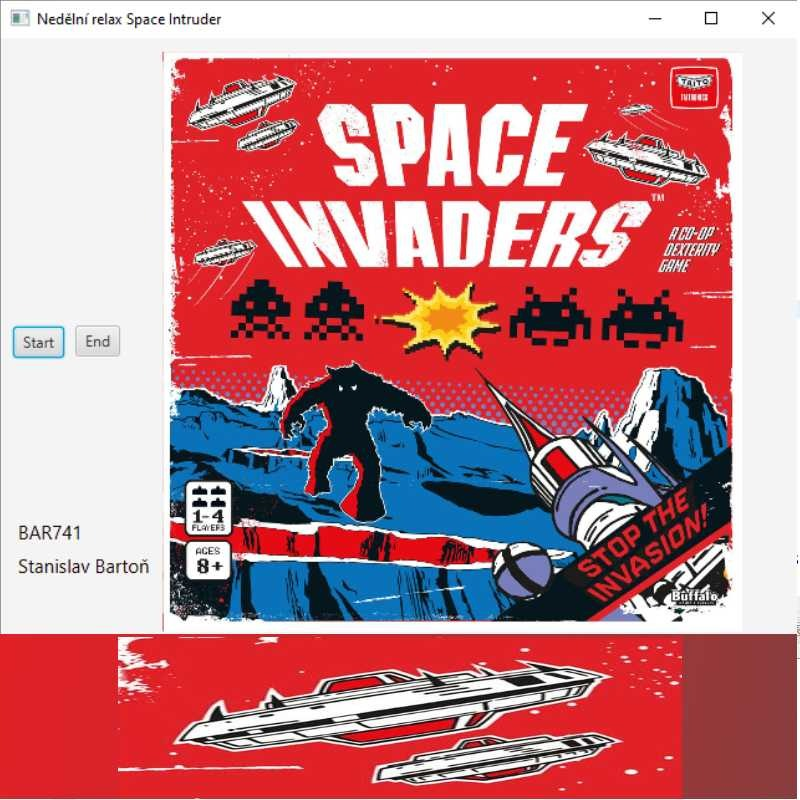
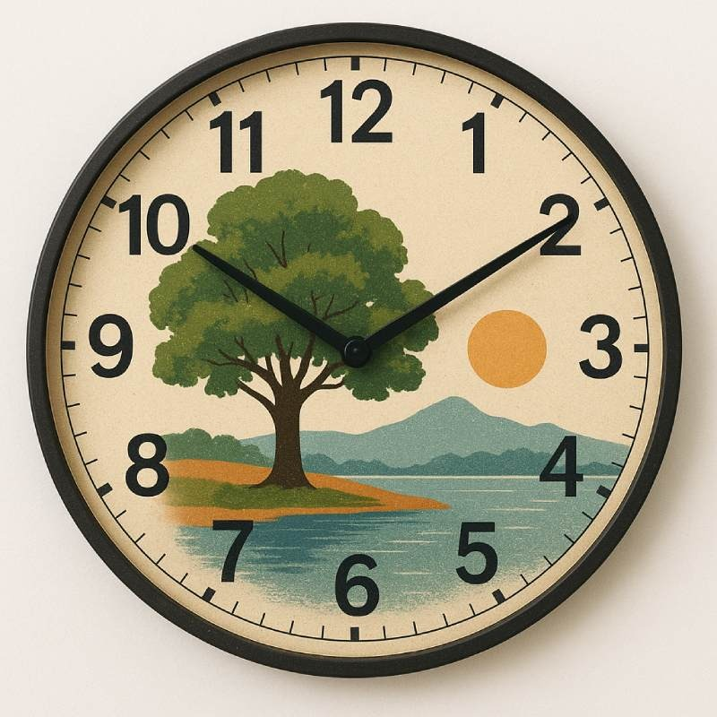
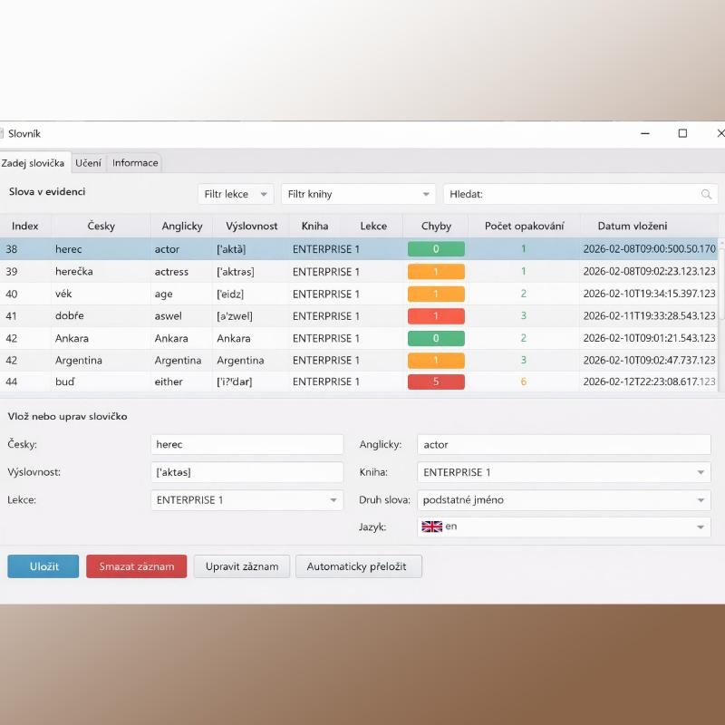

Na tomto webu sdílím své projekty z oblasti programování,
IT a technologií. Vytvářím aplikace pro vlastní potřebu
a experimentuji s různými nápady a řešeními.
Najdete zde ukázky projektů, poznámky z vývoje
a nástroje, které používám při práci.
MikroTik
IBM servery
Android environment
Java
Python
SQL
React
Bootstrap
TypeScript
3ds max
Illustrator
Photoshop
Mám několik dobrých nápadů jak obchodovat akciový index SP500. Ukolem je ho zautomatizovat. Takže matematický návrh a Programování. Backtrader je skvělý framework v programovacím jazyku Python. Taky je velmi dobře vyřešeno napojení na data brookera.

Dostal jsem skvělou knihu s algoritmickými problémy od Levitina. Dneska mám odpoledne čas a naprogramuju si úlohu "nejkratší cesta mezi dvěma městy". Není to tak lehké vytvořím si matici s desetitisíci městy. Takže se počítač při práci velmi nadře. Možná i několik hodin.

Tento projekt jsem věnoval úloze nalezení routeru. Pokud jsem v neznámé lokalitě, připojím se na neznámou WIFI pro hosty. Tak chci nalézt lepší signál. Tato aplikace má za úkol mnohem víc. Pokusím se navést tento Přístupový bod z dat které znám, které mi ukazuje telefon. Proces je jednoduchý snímat data ze senzoru akcelerometru a měření WIFI signálu.

Dnes je si udělám programoví ve sprintu. Budu tak dlouho pracovat dokud to nebude hotové. Programovací jazyk Java. Nebojte je to zábava a ne stres. No poslední věc co dělat s deštivou nedělí. Stihl jsem to za šest hodin, takže víc než dobré. Když přihlédnu k tomu že jsem si nakreslil vlastní textury bojovníku do hry. Skvělá zábava, takže vím co budu dělat příští deštivou neděli.

Správce Času je program pro jednoduché plánování a organizaci dne. Umožňuje nastavit čas pro důležité činnosti, jako je vstávání, práce, oběd nebo jiné aktivity.
Plán lze připravit také v Excelu ve formátu čas od–do, který program automaticky načte. Ke každé položce je možné nastavit upozornění, například budík.
Program také umožňuje zapsat skutečný začátek a konec činnosti a následně spočítá, kolik času jste jí opravdu věnovali. Díky přehlednému grafu dne snadno uvidíte svou efektivitu i případnou prokrastinaci.

Tuto aplikaci jsem vytvořil pro vlastní učení i testování slovní zásoby. Pohybuji se v prostředí, kde se běžně mluví německy i anglicky, proto je pro mě užitečné mít vlastní slovník.
Do aplikace si mohu zapisovat nejen jednotlivá slova, ale také celé fráze a jejich hovorovou podobu. Díky tomu si vytvářím vlastní okruhy slovní zásoby a zároveň se z nich mohu přímo testovat.